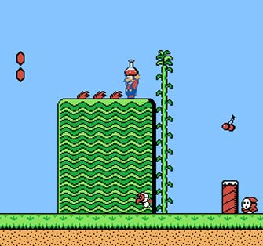

SUPER MARIO BROS 2
Mientras que en Japón el Super Mario Bros 2 era el Super Mario.: The Lost Levels en America sería el Doki Doki Panic! quien sería el Super Mario Bros 2. Para eso se cambiaron los personajes Mario (el padre), Peach (la mujer), Toad (el hermano pequeño) y Luigi (hermano mayor). El juego fue retocado con nuevas animaciones y algún cambio gráfico en enemigos y objetos para dar un ambiente familiar. Para justificar la diferencia de jugabilidad e historia entre esta versión y la anterior, el final del juego muestra a Mario en su cama, despertando de un largo sueño, lo que da a entender que todo lo vivido durante el juego sólo ocurrió en su imaginación.

La mecánica de este juego presenta muchas diferencias con su predecesor. En Super Mario Bros., cuando se saltaba sobre un enemigo, era eliminado. En Super Mario Bros. 2 no ocurre esto. Aquí, al saltar sobre un enemigo el personaje se mantiene sobre él. Para eliminarlo, deben de ser arrojados contra otro enemigo, hacia algún precipicio, o bien lanzarle alguna verdura. Para avanzar en el juego, el personaje debe superar obstáculos muy diferentes a los vistos en el título anterior, como las arenas movedizas o destruir paredes con bombas. Este videojuego tuvo gran aceptación en América, ya que gracias a él en Estados Unidos se creó la serie animada Super Mario Bros. Show donde aparecían tanto elementos del Super Mario Bros. original como del Super Mario Bros. 2. Volvió aparecer en Super Mario All-Star en 1993 y en 2007 en la Consola Virtual. Vendió 7,46 millones.